Overview
Keywords: earthquake early warning, spectral acceleration, adaptive time window, XGBoost, feature dichotomy, Sunda subduction zone
0.731
Composite R²
ⓘ click
93.0%
Stage 1 Accuracy
ⓘ click
72.3%
Damaging Recall
ⓘ click
103
Spectral Periods
ⓘ click
34,033
Traces
ⓘ click
515
XGBoost Models
ⓘ click
Interactive Pipeline
Click each stage.
🌊
P-wave Detection
GPD + Baer-Kradolfer
→
🏷
Stage 1: Intensity Gate
τc-dominant (51%)
→
📏
Stage 1.5: Distance
30 Zhang features
→
🔀
PTW Routing
Intensity x Distance
→
📊
Stage 2: Sa(T)
CVAD-dominant (89.5%)
P-wave Detection
Stage 1: Intensity Gate
- Weak (PGA < 3.0 Gal, MMI ≤ II): 32,001 traces (94.0%)
- Felt (3.0 ≤ PGA < 62.0 Gal, MMI III-V): 1,931 traces (5.7%)
- Damaging (PGA ≥ 62.0 Gal, MMI ≥ VI): 101 traces (0.3%)
Stage 1.5: Distance
PTW Routing
PTWselected ≤ tgolden(D̂) - twarn
Stage 2: Sa(T)
Core Innovation: IDA vs Source-Aware
❌ Source-Aware
Earthquake
→
Est. Magnitude
→
PTW
small (M<5) → PTW 3s
moderate (M5-6) → PTW 4s
large (M>6) → PTW 6s
Damaging Recall
1.3%
98% missed
✅ IDA-PTW
Earthquake
→
Obs. Intensity
→
PTW
Weak (PGA < 3 Gal) → PTW 3s
Felt (3-62 Gal) → PTW 4s
Damaging (≥62 Gal) → PTW 6s
Damaging Recall
72.3%
55x improvement
💡 Analogy
Source-Aware =
IDA-PTW =
⚖ Accuracy-Safety Tradeoff
| Metric | SA Fixed-8s | IDA Oper. | Interpretation |
|---|---|---|---|
| R² | 0.758 | 0.731 | |
| Damaging Recall | 1.3% | 72.3% | |
| Golden Time | No | Yes | |
| Autonomous | Needs catalog | Autonomous |
Why This Matters
1
The Saturation Problem
2
Feature Dichotomy
3
Golden Time Constraint
4
Real-World Scenario
Three Key Contributions
Contribution 1
Feature Dichotomy
Contribution 2
Adaptive PTW
Contribution 3
103 Periods Sa(T)
Positioning vs Existing Methods
| Study | Sa(T) | >20 T | 1-Stn | No Cat. | Adapt. | Safety | Ev-CV |
|---|---|---|---|---|---|---|---|
| Wu & Kanamori (2005) | – | – | ✓ | ✓ | – | – | – |
| Zollo et al. (2010) | – | – | ✓ | ✓ | – | ✓ | – |
| Lara et al. (2023) | ✓ | – | – | – | – | – | – |
| Iaccarino et al. (2024) | – | – | ✓ | ✓ | – | – | – |
| This study | ✓ | ✓ | ✓ | ✓ | ✓ | ✓ | ✓ |
E2E Results
| Strategy | R² | RMSE | ΔR² |
|---|---|---|---|
| Fixed 2s | 0.7454 | 0.5154 | -0.0004 |
| Fixed 3s (Baseline) | 0.7458 | 0.5151 | -- |
| Fixed 4s | 0.7495 | 0.5113 | +0.0037 |
| Fixed 6s | 0.7517 | 0.5090 | +0.0059 |
| Fixed 8s | 0.7584 | 0.5021 | +0.0126 |
| IDA + GT Distance | 0.7311 | 0.5179 | -0.0147 |
| IDA Operational | 0.7309 | 0.5181 | -0.0149 |
Pipeline Evidence
Stage 1
Intensity Gate
| Accuracy | 93.01% |
| Damaging Recall | 72.3% |
| Critical Miss | 8.9% |
| Top Feature | τc (51%) |
CM:
W→ 30540 1439 22
F→ 883 1041 7
D→ 9 19 73
F→ 883 1041 7
D→ 9 19 73
Key:
Stage 1.5
Golden Time Safety
| Routing Fidelity | 99.97% |
| Golden Time | >99% |
| Bias | Conservative ✅ |
| Top Feature | predominant_freq (19%) |
Oracle (perfect): R² = 0.7311
Predicted: R² = 0.7309
ΔR² = 0.0002
Predicted: R² = 0.7309
ΔR² = 0.0002
Why not R²? ⓘ
Routing
PTW Selection
| Golden Time | >99% |
| PTW 3-4s | 99.9% |
| ΔR² | 0.0002 |
Distribution:
3s: 24,020 (70.6%)
4s: 9,974 (29.3%)
6s: 26 (0.1%)
8s: 0 (0.0%)
4s: 9,974 (29.3%)
6s: 26 (0.1%)
8s: 0 (0.0%)
Stage 2
Sa(T) Regressors
| Models | 515 / 515 (0 failed) |
| R² mean (OOF) | 0.580 |
| R² range | 0.481 – 0.644 |
| Top Feature | CVAD (89.5%) |
| CV | 5-fold GroupKFold |
End-to-End
Full Pipeline
IDA R²
0.731
RMSE
0.518
log⊂10 m/s²
Recall
72.3%
Oracle Δ
0.0002
robust
Interactive Charts
Hover to explore.
E2E Performance
Without vs With Vs30
0.544
R² min (T≈0.3s)
0.709
R² max (T=5.0s)
0.646
R² mean
0.663
R² median
Why R² drops at T=0.3-0.6s
Theory
| Component | T < 0.5s | T > 1s |
|---|---|---|
| Source | Stress drop — variable | Moment — stable |
| Path | High attenuation — variable | Low attenuation — stable |
| Site | Amplified — very variable | Minimal effect — stable |
| Pipeline | Cannot capture → low R² | Well captured → high R² |
1
Site Effects
2
Path Attenuation
3
P-wave Window
4
Intra-Band Variability
Short Period
f = 2–10 Hz
0.544
High variability
↔
23% gap
Long Period
f = 0.2 Hz
0.709
Low variability
✅ With Vs30 (338 sta)
100% improved — ΔR² +24.6%
| Metric | Base(42f) | Ph1(203) | Ph2(338) | ΔBase |
|---|---|---|---|---|
| R² mean | 0.5798 | 0.6096 | 0.7224 | +0.143 (+24.6%) |
| Short T=0.05-0.6s | 0.489 | 0.508 | 0.683 | +0.194 |
| Long T≥3.0s | 0.607 | 0.647 | 0.778 | +0.171 |
| Improved | 103 / 103 (100%) | |||
PGA
T = 0 s
0.516 → 0.696
+0.180 (+34.9%)
Sa(1.0 s)
f = 1.0 Hz
0.527 → 0.705
+0.178 (+33.7%)
By Band
Key Periods
Interpretation:
Safety
| Strategy | Damaging Recall | Critical Miss |
|---|---|---|
| IDA-PTW | 72.3% | 8.9% |
| Source-Aware | 1.3% | ~98% |
Comprehensive Metrics
| Metric | Value | Detail |
|---|---|---|
| Mean R² | 0.427 | |
| σtotal | 0.752 | τ = 0.460, φ = 0.594 (φ ~ 70%) |
| Within ±1.0 | 83.3% | ±0.5: 54.4%, ±0.3: 30.8% |
| M ≥ 6.5 | Severe | |
| Near-field | −1.5 to −2.0 |
Evaluation Figures
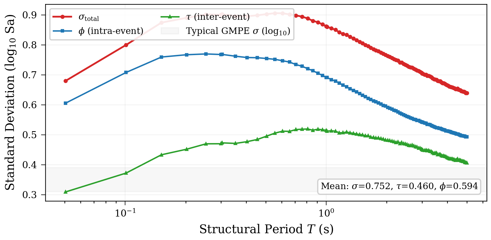
Fig 10.
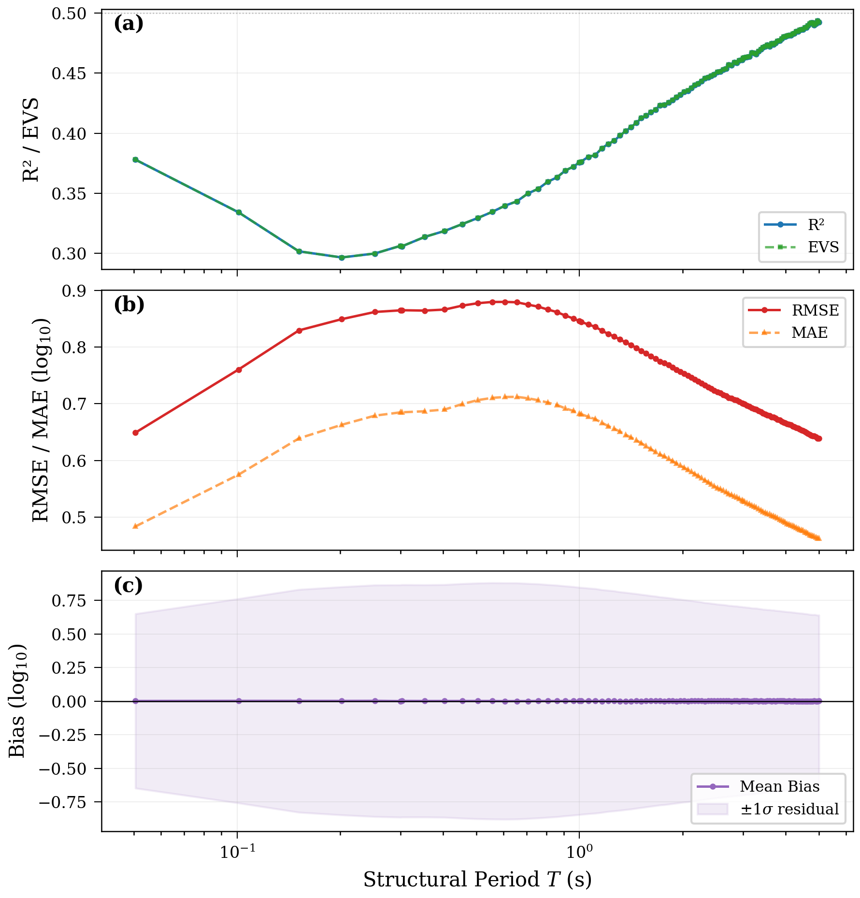
Fig 11.
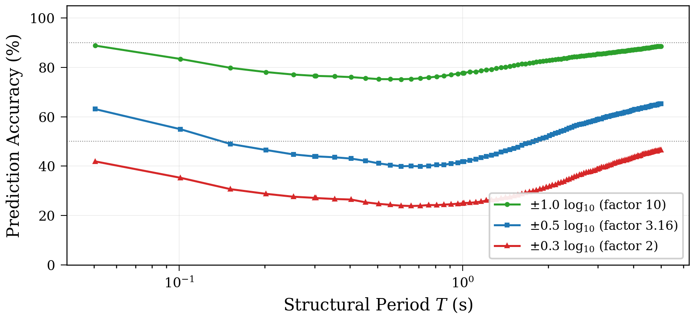
Fig 12.
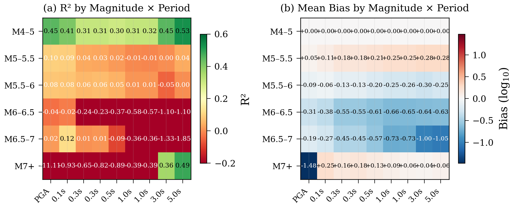
Fig 13.
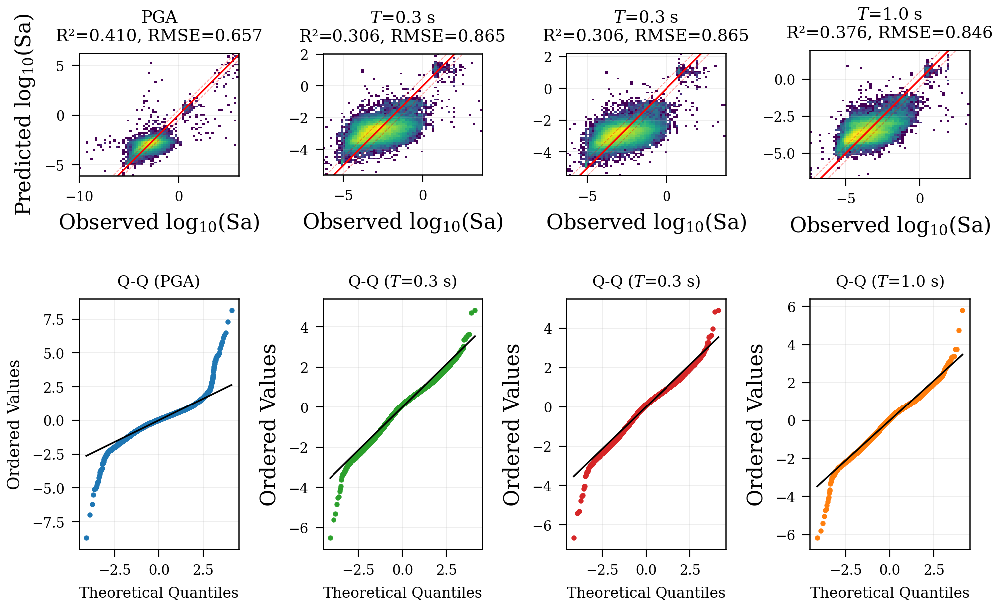
Fig 14.
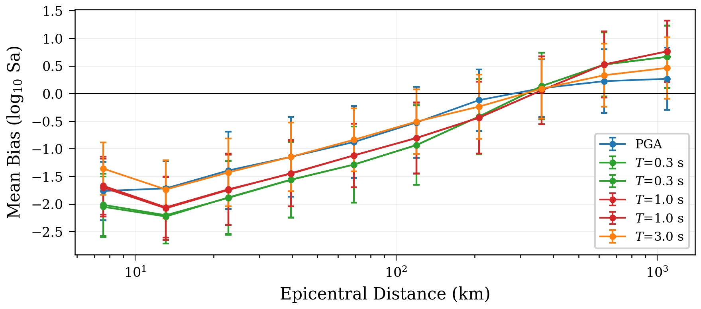
Fig 15.
Methodology:
Figures
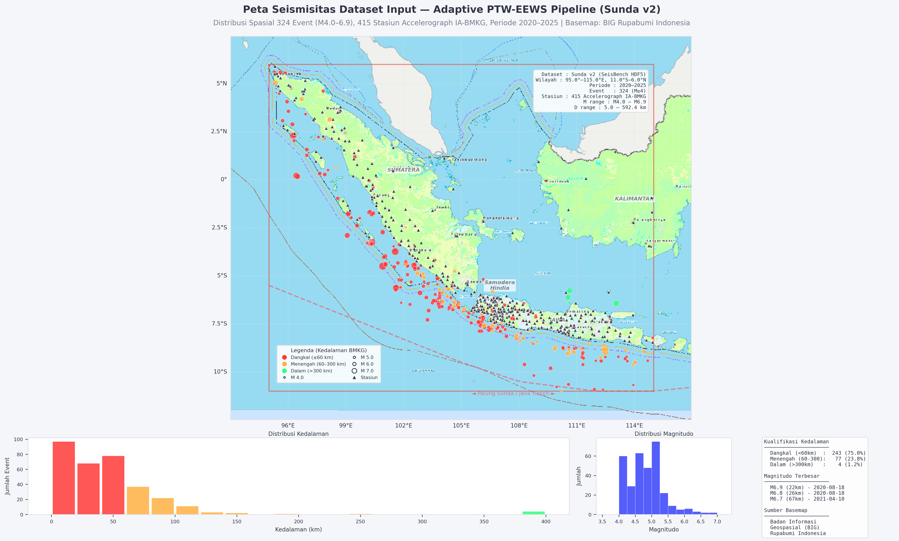
Fig 1.
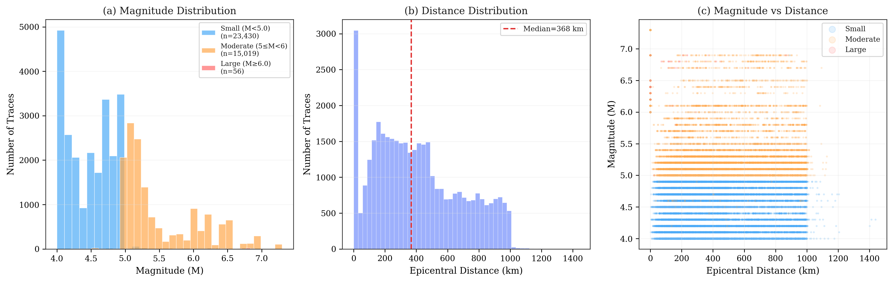
Fig 2.
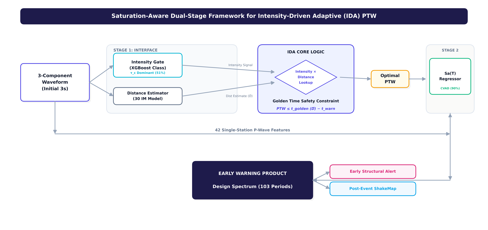
Fig 3.
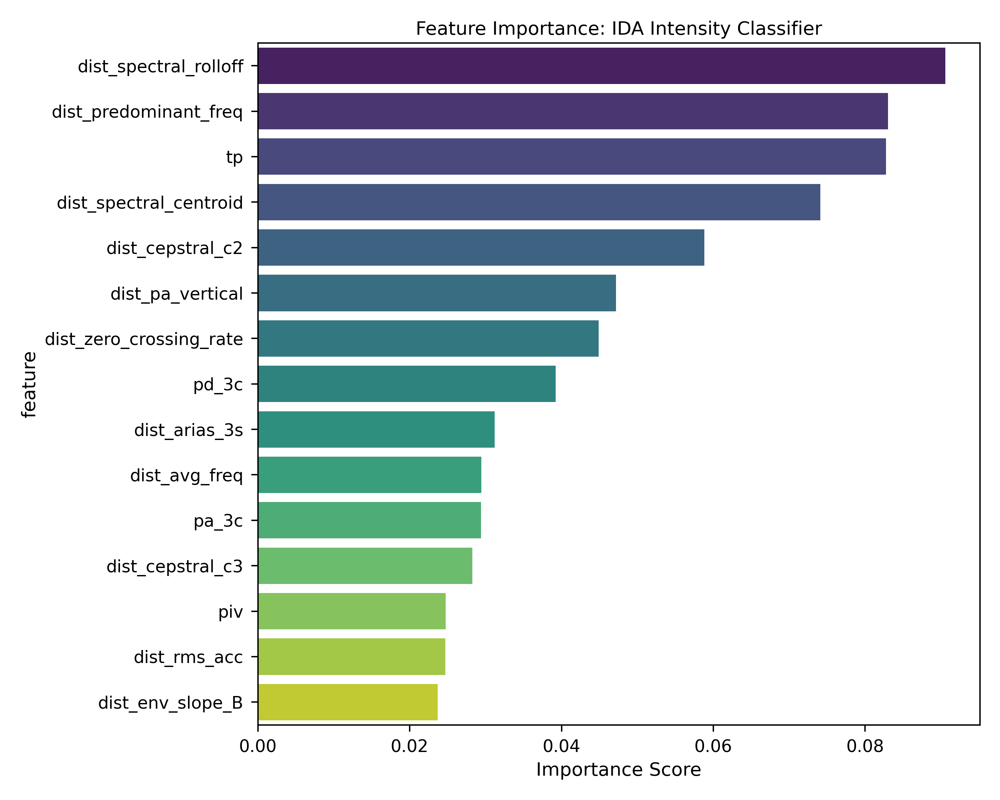
Fig 4.
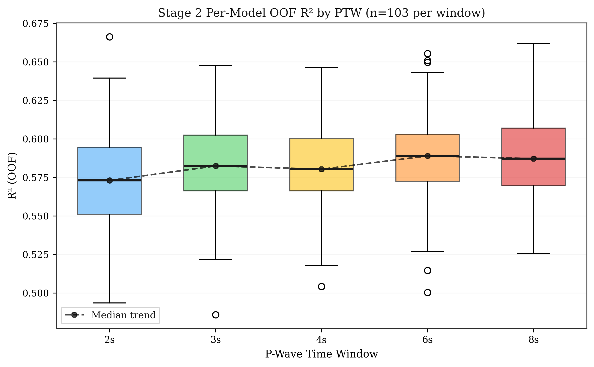
Fig 5.
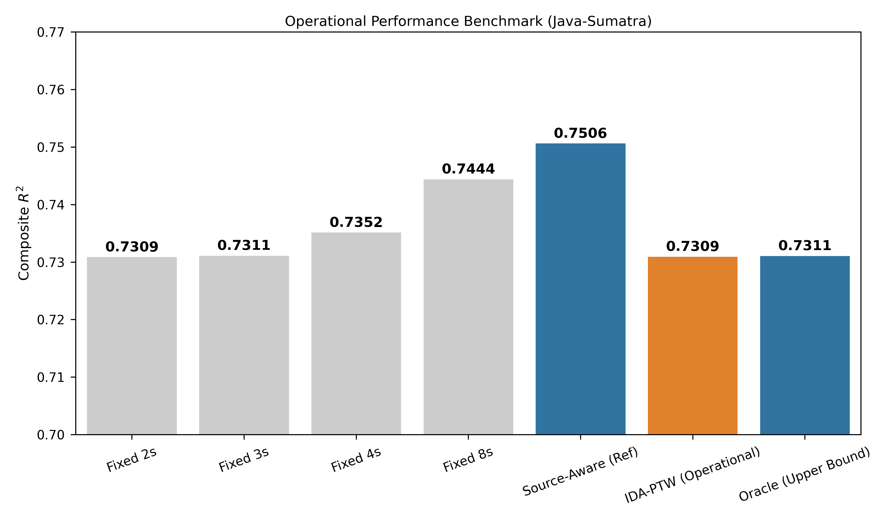
Fig 6.
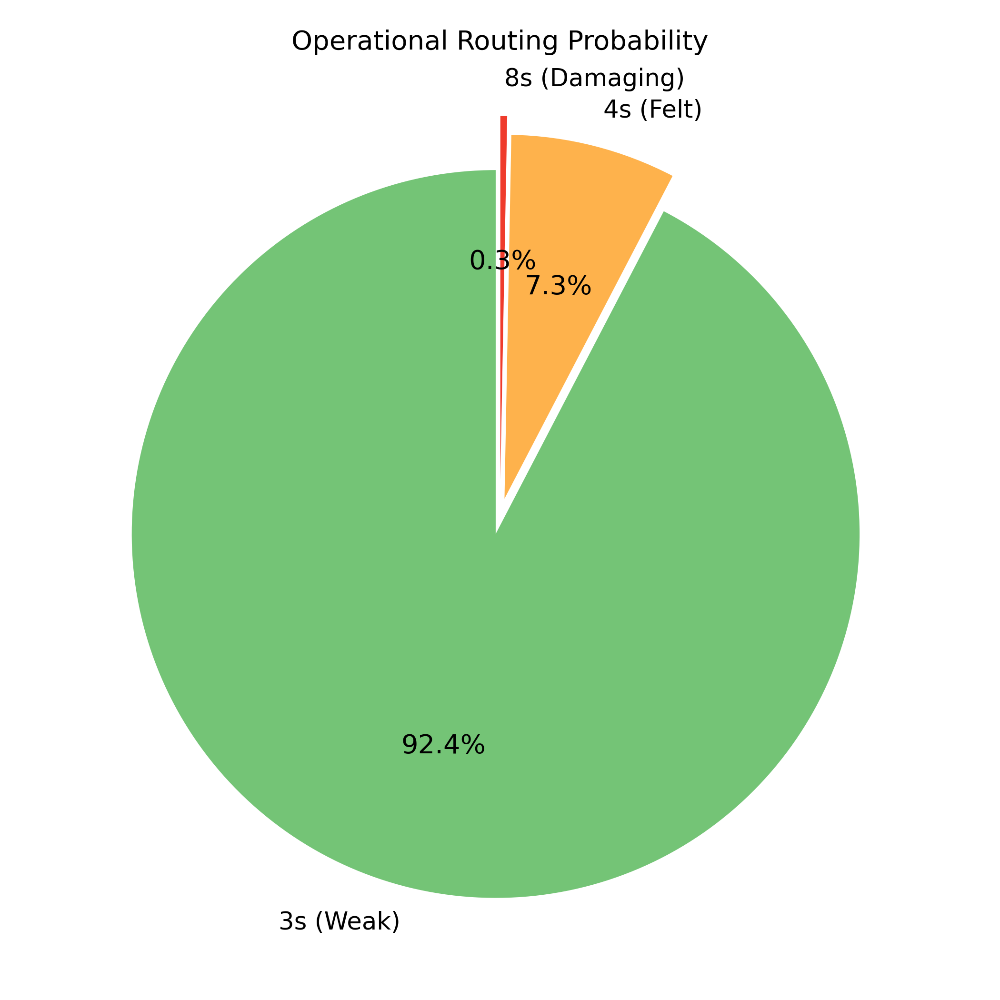
Fig 7.
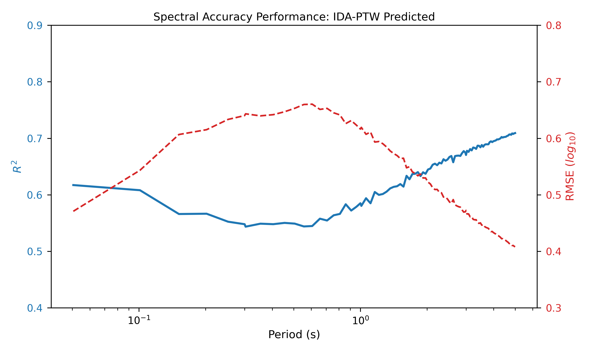
Fig 8.
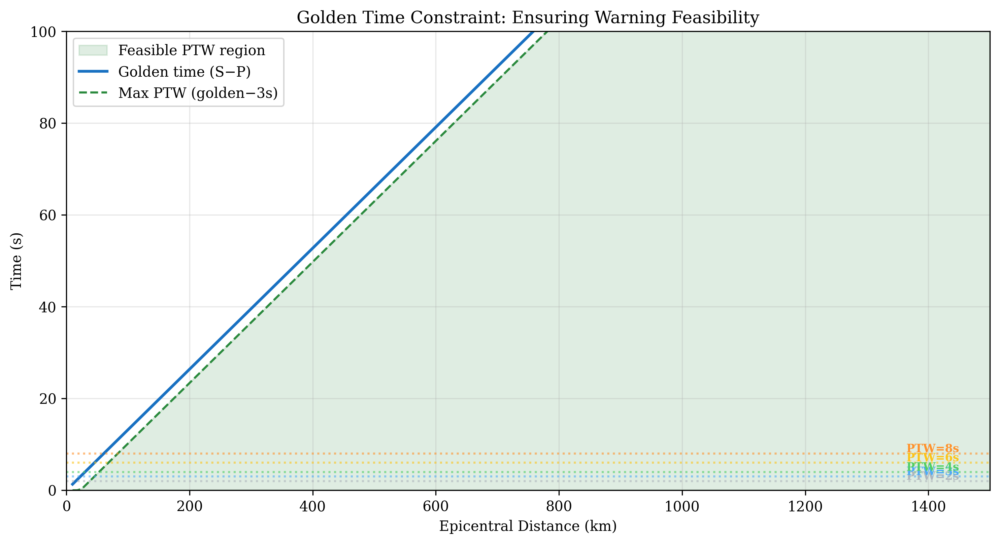
Fig 9.
Manuscript
Loading manuscript...